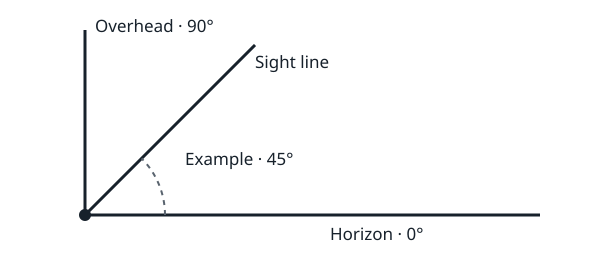

LIVE ORBIT · BLANK WORKSHEET · NOT AN OBSERVATION REPORT
Record what the app predicted, then what you actually saw. Leave unknown values blank. A matching moving light is a clue; it is not proof of identity by itself.
Keep precise home coordinates and private notifications out of shared screenshots.

Outcome: □ seen □ not seen □ uncertain □ session cancelled
Identity confidence: □ confirmed with recorded evidence □ likely □ unknown
Record a miss honestly. Do not turn “not seen” into “no satellite passed.” Compare timings only when they refer to the same event.